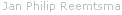
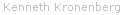
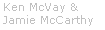

|
Direkt-Link zur Ausstellung:
Vernichtungskrieg.
Verbrechen der Wehrmacht 1941 - 1944
|
Die Skala des Scheußlichen ist nach unten offen
Jan Philipp Reemtsma über Gewalt im 20. Jahrhundert und die Verbrechen der Wehrmacht
Sie haben ihn attackiert. Für die Gräber der Kriegsopfer solle er was spenden, empfahl die CDU-Bundestagsabgeordnete Erika Steinbach. Kranken Rauchern möge er was zugute kommen lassen, verlangte der Münchner CSU-Chef Peter Gauweiler. Die Rechtskonservativen richteten ihre Angriffe gegen Jan Philipp Reemtsma.
Der 45jährige ist der Chef des Hamburger Instituts für Sozialforschung.
Die Einrichtung zeichnet verantwortlich für die Ausstellung über die Verbrechen der deutschen Wehrmacht in der Sowjetunion. Eine Dokumentation des Vernichtungskriegs, die vom heutigen Montag an in der Frankfurter Paulskirche zu sehen ist.
Die Ausstellung wirkte "wie ein Reiz, der Geschichten zum Vorschein bringt, die abgekapselt waren, weggedrängt, verleugnet", sagt Reemtsma, dem die Konservativen einem Vorwurf gleich nachtragen, er habe Millionen geerbt. Hat er auch.
Aber er zog sein Geld von den Kapitalmärkte ab und steckte es in die Produktion von Ideen. Reemtsma gibt sein Geld dafür aus, daß "Leute gut und genau denken". Im Mittelweg 36, gute Adresse in Hamburg. Dort sprach der Mäzen mit den FR
-Redakteuren Matthias Arning und Axel Vornbäumen über das Phänomen der Gewalt, die Wirkung des US-Historikers Daniel Goldhagen, über Theodor W. Adorno, Dummköpfe und die Ausstellung.
|